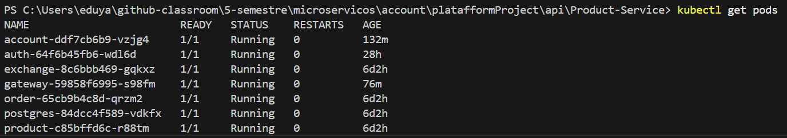

Minikube & Kubernetes Setup¶
Visão Geral¶
Esta etapa define como configurar o ambiente local com Kubernetes usando Minikube ou Kind para hospedar todos os microserviços da aplicação em um único cluster local.
Todos os microserviços devem ser configurados com recursos Kubernetes próprios, incluindo arquivos k8s.yaml contendo Secrets, ConfigMaps, Deployments e Services.
Requisitos¶
- Minikube ou Kind instalado (ou Kubernetes via Docker Desktop com suporte habilitado).
- Docker instalado e configurado.
- Acesso a terminal com permissões de administrador.
- Arquivos
k8s.yamlde cada microserviço na estrutura do projeto.
Estrutura do Projeto¶
Cada microserviço deve conter seus arquivos de configuração no seguinte formato:
📁 api/
└── 📁 account-service/
└── 📁 k8s/
└── 📄 k8s.yaml
└── 📁 auth-service/
└── 📁 k8s/
└── 📄 k8s.yaml
└── 📁 gateway-service/
└── 📁 k8s/
└── 📄 k8s.yaml
└── 📁 product-service/
└── 📁 k8s/
└── 📄 k8s.yaml
└── 📁 order-service/
└── 📁 k8s/
└── 📄 k8s.yaml
Recursos Obrigatórios em Cada k8s.yaml¶
Cada arquivo de configuração Kubernetes (k8s.yaml) deve conter os seguintes recursos:
- Secret – Para credenciais e variáveis sensíveis.
- ConfigMap – Para variáveis de ambiente e configurações de aplicação.
- Deployment – Define como o pod será criado.
- Service – Expõe o microserviço para dentro do cluster.
Comandos Úteis¶
Iniciar o Minikube:¶
minikube start
Aplicar os arquivos de configuração:¶
kubectl apply -f account-service/k8s/k8s.yaml
kubectl apply -f auth-service/k8s/k8s.yaml
kubectl apply -f gateway-service/k8s/k8s.yaml
kubectl apply -f product-service/k8s/k8s.yaml
kubectl apply -f order-service/k8s/k8s.yaml
Verificar se os serviços estão rodando:¶
kubectl get all
Validação¶
Para validar que todos os serviços estão rodando no mesmo cluster, grave um vídeo mostrando os comandos abaixo:
kubectl config current-context
kubectl get pods
kubectl get services
Confirme que os pods de todos os serviços estão ativos e com status Running.

Alternativas¶
Se desejar usar um provedor de nuvem em vez de local:
- AWS EKS
- Azure AKS
- Google GKE
Certifique-se de que o cluster na nuvem também esteja configurado com o mesmo conjunto de arquivos
k8s.yaml.
Considerações Finais¶
- Utilizar um cluster unificado facilita o desenvolvimento e testes locais.
- Toda a configuração de Kubernetes deve ser mantida versionada no repositório.
- É possível configurar ingress controller para expor múltiplos serviços via um único IP externo (opcional).